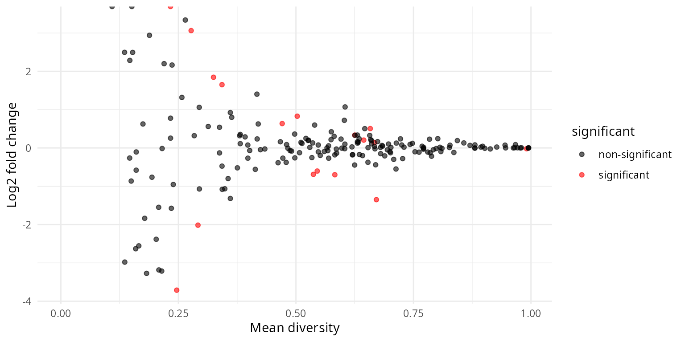
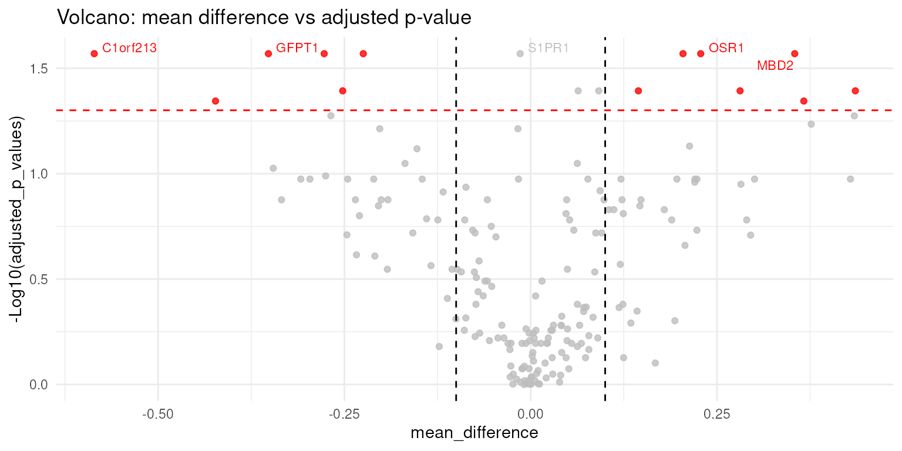
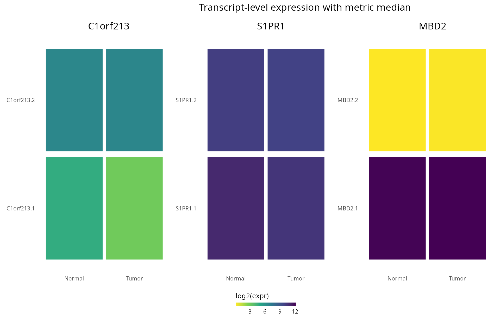
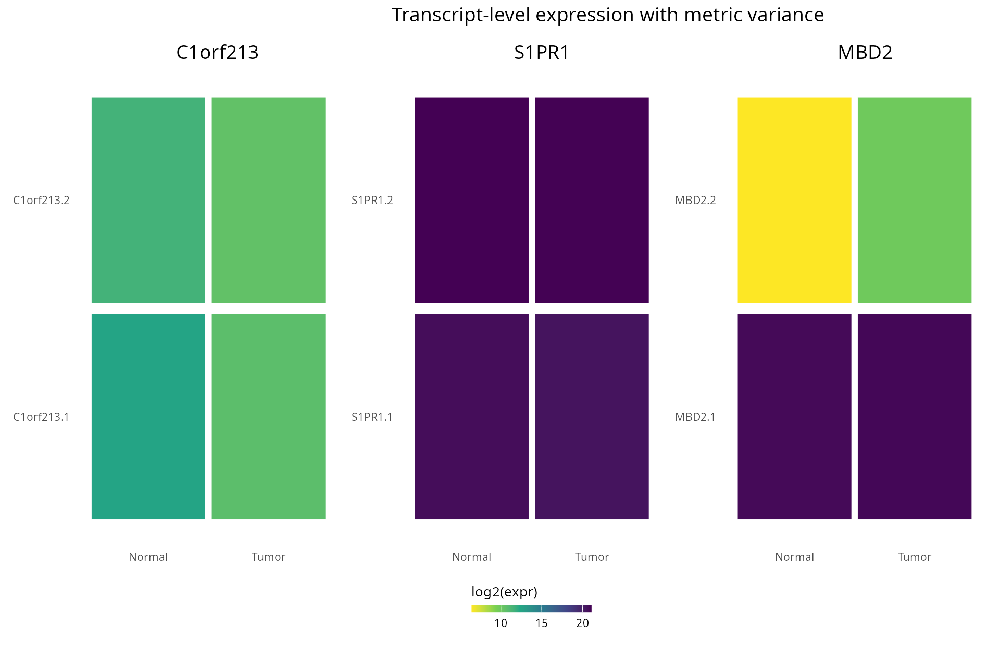
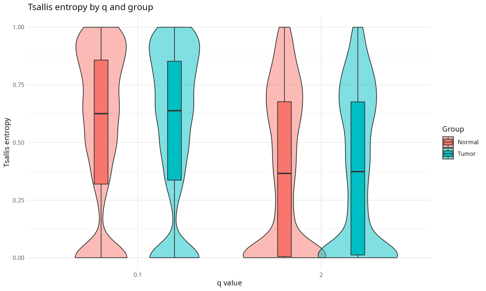
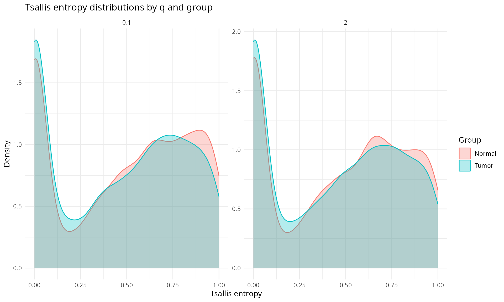

TSENAT: Tsallis Entropy Analysis Toolbox
Cristóbal Gallardo gallardoalba@pm.me
2026-02-05
Source:vignettes/TSENAT.Rmd
TSENAT.RmdOverview
This vignette demonstrates how to compute and apply Tsallis entropy
to transcript-level expression data using TSENAT. It
focuses on three practical goals: (1) compute per-sample, per-gene
diversity measures across a range of sensitivity parameters
q; (2) compare those measures between sample groups; and
(3) visualize and inspect transcript-level patterns that explain
differences.
Motivation
Many genes express multiple isoforms whose relative abundances can be
multimodal or heavy-tailed. Standard mean-based comparisons may miss
changes in isoform dominance or heterogeneity. Tsallis entropy provides
a tunable way to weight rare versus dominant isoforms by varying
q, producing a “q-curve” that reveals scale-dependent
diversity differences.
High-level workflow
- Preprocess counts and filter low-abundance transcripts.
- Compute relative transcript proportions within each gene and
evaluate Tsallis entropy across one or more
qvalues. - Summarize per-gene values across samples (mean/median) and test for differences between groups (Wilcoxon or permutations).
- Visualize q-curves and inspect transcript-level counts for top genes.
What is Tsallis entropy?
Tsallis entropy is a one-parameter family of diversity measures that
generalizes Shannon entropy via a sensitivity parameter q.
For a discrete probability vector
it is defined as
Why use Tsallis entropy for gene-expression data?
Tsallis entropy provides a compact, flexible summary of isoform-level heterogeneity that is particularly useful when biological signals act at different abundance scales; combined with careful preprocessing and resampling-based uncertainty quantification it is a practical and interpretable tool for transcriptomics analyses. Key advantages:
-
Tunable sensitivity: changing
qshifts emphasis between rare and dominant isoforms. Use smallq() to probe rare-isoform heterogeneity and largerq() to focus on dominant-isoform behaviour; plottingS_qacross a compactqgrid (a “q-curve”) reveals scale-dependent differences between conditions. -
Interpretability: Tsallis maps to several familiar
indices in limits (Shannon at
q=1, richness-like atq=0, Gini–Simpson atq=2), so it unifies multiple perspectives on isoform diversity within one framework. -
Robust summary and diagnostics: combined with Hill
numbers and q-curves,
S_qsupports concise reporting (effective isoform counts, slope/AUC summaries) and targeted follow-up (transcript-level plots).
Essential limiting cases:
- Limit : Shannon entropy, .
- : richness-like (number of expressed isoforms minus one).
- : Gini–Simpson / collision index, .
- Uniform maximum: for expressed isoforms, and normalized .
Use cases and interpretation:
A gene with group separation only at low q suggests
differences in low-abundance (rare) isoforms; separation at high
q indicates changes in dominant isoforms. When both regimes
differ, the q-curve will show divergence across the entire
q range.
Report S_q or Hill numbers D_q as
appropriate for clarity: D_q converts entropies into an
“effective number of isoforms” that is easy to interpret.
Example dataset
An example dataset is included for demonstration. Load the package and data:
# Load packages
suppressPackageStartupMessages({
library(TSENAT)
library(ggplot2)
library(SummarizedExperiment)
library(mgcv)
})Sample naming and pairing requirements
TSENAT requires a consistent, exact mapping between the assay column
names and the values in coldata$Sample. The following rules
and recommendations make mapping reliable and avoid surprises when
running paired analyses.
- Naming convention: for paired comparisons use a shared base
identifier and a role suffix, e.g.
SAMPLE_N/SAMPLE_TorSAMPLE_Normal/SAMPLE_Tumor. The helperinfer_sample_group()recognizes common underscore suffixes (like_N/_T) and common TCGA-style tokens. - Validation and metadata: to perform paired analyses call
map_coldata_to_se(..., paired = TRUE). Whenpaired = TRUEthe function will reorder columns to followcoldata, addsample_typeandsample_basetocolData(ts_se), and check that eachsample_basehas entries for all groups, returning an informative error if not.
The following example from coldata_df illustrates a
correct format:
Sample Condition
TCGA-A7-A0CH_N Normal
TCGA-A7-A0D9_N Normal
TCGA-A7-A0CH_T Tumor
TCGA-A7-A0D9_T TumorLoad data and metadata
Now we load the example dataset and associated metadata:
# Load required files
coldata_tsv <- system.file("extdata", "coldata.tsv", package = "TSENAT")
tx2gene_tsv <- system.file("extdata", "tx2gene.tsv", package = "TSENAT")
data("tcga_brca_luma_dataset", package = "TSENAT", envir = globalenv())
# Extract gene names and read count data (do not reference ts_se yet)
genes <- tcga_brca_luma_dataset[, 1]
readcounts <- tcga_brca_luma_dataset[, -1]
# Assign transcript IDs as rownames of `readcounts`
# so downstream transcript-level plotting functions can use them.
txmap <- utils::read.delim(tx2gene_tsv, header = TRUE, stringsAsFactors = FALSE)
rownames(readcounts) <- as.character(txmap$Transcript)
# Read sample metadata
coldata_df <- read.table(coldata_tsv,
header = TRUE,
sep = "\t",
stringsAsFactors = FALSE
)The next step is to inspect the loaded data to ensure it looks correct.
# Check gene names
head(genes)
#> [1] "MXRA8" "MXRA8" "MXRA8" "MXRA8" "MXRA8" "C1orf86"
# Check read count dataset
dim(readcounts)
#> [1] 1100 40
head(readcounts[, 1:5])
#> TCGA-A7-A0CH_N TCGA-A7-A0CH_T TCGA-A7-A0D9_N TCGA-A7-A0D9_T
#> MXRA8.1 2858.04 743.56 812.59 0.00
#> MXRA8.2 127.82 21.28 50.87 38.21
#> MXRA8.3 370.22 94.38 368.76 98.12
#> MXRA8.4 7472.00 3564.87 7647.76 3236.28
#> MXRA8.5 25.44 16.91 4.07 7.55
#> C1orf86.1 0.00 0.00 0.00 0.00
#> TCGA-A7-A0DB_T
#> MXRA8.1 1508.90
#> MXRA8.2 30.10
#> MXRA8.3 167.89
#> MXRA8.4 6360.80
#> MXRA8.5 34.74
#> C1orf86.1 0.00
# Check the metadata
head(coldata_df)
#> Sample Condition
#> 1 TCGA-A7-A0CH_N Normal
#> 2 TCGA-A7-A0D9_N Normal
#> 3 TCGA-A7-A0DB_N Normal
#> 4 TCGA-A7-A0DC_N Normal
#> 5 TCGA-A7-A13G_N Normal
#> 6 TCGA-AC-A2FB_N NormalData filtering and preprocessing
As a first step, before doing the diversity calculation, you might want to filter out genes with a low overall expression or limit the analysis to transcripts with a sufficient minimum expression level. Expression estimates of transcript isoforms with zero or low expression might be highly variable. For more details on the effect of transcript isoform prefiltering on differential transcript usage, see this paper.
Filter transcripts with fewer than 5 reads in more than 5 samples and
update the genes vector accordingly.
## Filter lowly-expressed transcripts and report counts
n_before <- nrow(readcounts)
tokeep <- rowSums(readcounts > 5) > 5
readcounts <- readcounts[tokeep, ]
genes <- genes[tokeep]
n_after <- nrow(readcounts)
message(sprintf(
"Transcripts: before = %d, after = %d",
n_before, n_after
))
#> Transcripts: before = 1100, after = 833We filter lowly-expressed transcripts to reduce noise and improve the stability of diversity estimates.
Compute normalized Tsallis entropy.
Compute Tsallis entropy for a single q and inspect the
resulting assay.
# compute Tsallis entropy for a single q value (normalized)
q <- 0.1
ts_se <- calculate_diversity(readcounts, genes, q = q, norm = TRUE)
head(assay(ts_se)[1:5, 1:5])
#> TCGA-A7-A0CH_N TCGA-A7-A0CH_T TCGA-A7-A0D9_N TCGA-A7-A0D9_T
#> MXRA8 0.8616275 0.6609111 0.8156972 0.6633580
#> C1orf86 0.0000000 0.0000000 0.0000000 0.0000000
#> PDPN 0.3486679 0.3395884 0.0000000 0.3481643
#> ALDH4A1 0.8111864 0.4667361 0.8621495 0.5069312
#> HNRNPR 0.5204909 0.6683829 0.7395887 0.6537834
#> TCGA-A7-A0DB_T
#> MXRA8 0.8036333
#> C1orf86 0.0000000
#> PDPN 0.3467400
#> ALDH4A1 0.5046596
#> HNRNPR 0.8287792Now we should map the sample metadata (if available) into the
SummarizedExperiment so plotting functions can use
sample_type for grouping.
ts_se <- map_coldata_to_se(ts_se, coldata_df, paired = TRUE)After mapping, inspect colData(ts_se) to confirm
sample_type and sample_base are present and
correctly populated.
# Quick checks on mapped sample metadata
cd <- colData(ts_se)
colnames(cd) # list available metadata columns
#> [1] "samples" "sample_type" "sample_base"
head(cd) # preview metadata for first samples
#> DataFrame with 6 rows and 3 columns
#> samples sample_type sample_base
#> <character> <character> <character>
#> TCGA-A7-A0CH_N TCGA-A7-A0CH_N Normal TCGA-A7-A0CH_N
#> TCGA-A7-A0CH_T TCGA-A7-A0CH_T Tumor TCGA-A7-A0CH_T
#> TCGA-A7-A0D9_N TCGA-A7-A0D9_N Normal TCGA-A7-A0D9_N
#> TCGA-A7-A0D9_T TCGA-A7-A0D9_T Tumor TCGA-A7-A0D9_T
#> TCGA-A7-A0DB_N TCGA-A7-A0DB_N Normal TCGA-A7-A0DB_N
#> TCGA-A7-A0DB_T TCGA-A7-A0DB_T Tumor TCGA-A7-A0DB_TDifferential analysis
This section summarizes practical guidance for hypothesis testing and reporting when comparing diversity measures across sample groups.
The package exposes pragmatic pairwise tests for comparing per-gene diversity summaries between two groups. Two common choices are Wilcoxon-based tests and label-shuffle tests. Guidance:
Wilcoxon rank-sum (unpaired) / Wilcoxon signed-rank (paired):
- Use when you want a distribution-free test comparing central tendency (ranks/median) and sample sizes are moderate (typically ≥10 per group for stable asymptotic p-values).
- Assumptions: independent observations within groups (or matched pairs for the signed-rank test); exchangeability under the null.
- Handle ties: software returns approximate p-values when many ties exist; consider permutation p-values when ties or discreteness are extreme (small counts, many zeros).
- Report effect sizes (median difference, Hodges–Lehmann estimator) and confidence intervals where possible; do not rely on p-values alone.
Label-shuffle tests:
- Use when sample sizes are small, distributional assumptions are questionable, or you prefer an exact/empirical null constructed from the observed data. Randomly shuffle group labels many times and recompute the test statistic (difference in medians or means).
- Exchangeability requirement: permutations are valid when labels are exchangeable under the null (e.g., independent samples). For paired designs use paired permutations that shuffle within pairs or use sign flips for paired differences.
- Practical settings: set
randomizationsto ≥1000 for routine use and 5000+ when estimating small p-values or when applying FDR across many genes. When possible, compute exact permutations (all labelings) for very small datasets.
Here we will use the Wilcoxon test; it is the appropriate choice for speed when sample sizes support asymptotic approximations. Use permutation tests when small-sample accuracy or exact control of the null distribution is important.
Recommendation: summary & test choice:
For the analyses shown in this vignette we recommend using the median in the Wilcoxon rank-sum test for comparisons. Tsallis entropy values are often skewed and sensitive to outliers; the median is robust and the Wilcoxon test does not assume normality, so this combination is well suited for our analysis.
Before running differential tests we summarize per-gene diversity values across samples and explicitly define sample groups.
# create a sample grouping vector inferred from sample names
# account for per-q column names like 'Sample_q=0.01'
sample_base_names <- sub(
"_q=.*", "",
colnames(assay(ts_se))
)
samples <- as.character(colData(ts_se)$sample_type)
# prepare diversity table as data.frame with gene names in first column
div_df <- as.data.frame(assay(ts_se))
div_df <- cbind(genes = rowData(ts_se)$genes, div_df)
# samples are matched pairs (Normal/Tumor), so use a paired test
res <- calculate_difference(div_df, samples,
control = "Normal",
method = "median", test = "wilcoxon",
paired = TRUE
)
# sort results by adjusted p-value
res <- res[order(res$adjusted_p_values), , drop = FALSE]
head(res)
#> genes Tumor_median Normal_median median_difference log2_fold_change
#> 6 C1orf213 0.0000010 0.9870253 -0.98702427 -19.912727492
#> 17 S1PR1 0.9931595 0.9993087 -0.00614921 -0.008904999
#> 87 MBD2 0.5592953 0.0000010 0.55929434 19.093250788
#> 98 OSR1 0.7933920 0.6636451 0.12974692 0.257621943
#> 101 GFPT1 0.0000010 0.5834509 -0.58344994 -19.154251821
#> 126 KIF9 0.5814162 0.3710543 0.21036198 0.647941169
#> raw_p_values adjusted_p_values
#> 6 0.0002357454 0.0269389
#> 17 0.0007285418 0.0269389
#> 87 0.0006535852 0.0269389
#> 98 0.0005801974 0.0269389
#> 101 0.0008919014 0.0269389
#> 126 0.0006356242 0.0269389Generate diagnostic plots to summarize per-gene effect sizes:
- The MA plot shows the relationship between mean expression and log-fold change, helping to spot genes with large effect sizes across expression levels.
- The volcano plot displays effect size versus significance, useful for highlighting candidates by thresholding magnitude and adjusted p-value.

# Volcano plot: mean difference vs -log10(adjusted p-value)
p_volcano <- plot_volcano(res)
print(p_volcano)
Plot top 3 genes from the single-q differential analysis
Here we visualize transcript-level expression for the most
significant genes identified in the previous step. The
plot_top_transcripts() helper expects transcript-level
counts (rows = transcripts) with rownames matching the
tx2gene mapping. We plot the top three genes by
significance to inspect isoform-level patterns that may explain the
diversity differences.
sig_res <- res[res$adjusted_p_values < 0.05, , drop = FALSE]
top_genes <- head(sig_res$genes, 3)
sample_base_names <- sub(
"_q=.*",
"",
colnames(assay(ts_se))
)
samples_vec <- as.character(colData(ts_se)$sample_type)
# Plot using median aggregation
p_median <- plot_top_transcripts(readcounts,
gene = top_genes,
samples = samples_vec, tx2gene = txmap,
top_n = NULL, metric = "median"
)
print(p_median)
Now, we will plot the same top genes but using variance aggregation instead of median. This allows us to see how transcript-level expression variability differs between groups for these genes.
# Plot using variance aggregation
p_var <- plot_top_transcripts(readcounts,
gene = top_genes,
samples = samples_vec, tx2gene = txmap,
top_n = NULL, metric = "variance"
)
print(p_var)
Using these concrete comparisons will help you distinguish consistent isoform-level regulation, outlier-driven artifacts, reciprocal isoform switching, and subgroup heterogeneity.
Compare between q values
Compute normalized Tsallis entropy for two q values (0.1
and 2) to compare scale-dependent behavior.
# compute Tsallis entropy for q = 1 (normalized)
q <- c(0.1, 2)
ts_se <- calculate_diversity(readcounts, genes,
q = q, norm = TRUE
)
head(assay(ts_se)[1:5, 1:5])
#> TCGA-A7-A0CH_N_q=0.1 TCGA-A7-A0CH_N_q=2 TCGA-A7-A0CH_T_q=0.1
#> MXRA8 0.8616275 0.6063802 0.6609111
#> C1orf86 0.0000000 0.0000000 0.0000000
#> PDPN 0.3486679 0.6619058 0.3395884
#> ALDH4A1 0.8111864 0.7478309 0.4667361
#> HNRNPR 0.5204909 0.6176153 0.6683829
#> TCGA-A7-A0CH_T_q=2 TCGA-A7-A0D9_N_q=0.1
#> MXRA8 0.3925463 0.8156972
#> C1orf86 0.0000000 0.0000000
#> PDPN 0.5044987 0.0000000
#> ALDH4A1 0.2841620 0.8621495
#> HNRNPR 0.6856195 0.7395887This allows comparison across q for the same gene to
determine whether diversity differences are scale-dependent (for
example, significance at q = 0.1 but not at
q = 2 suggests rare-isoform-driven changes).
Map optional sample metadata into the multi-q
SummarizedExperiment so plotting helpers have access to
sample_type for grouping.
ts_se <- map_coldata_to_se(ts_se, coldata_df)Create violin and density plots summarizing
diversity across multiple q values to show distributional
differences between groups.
p_violin <- plot_tsallis_violin_multq(ts_se, assay_name = "diversity")
print(p_violin)
p_density <- plot_tsallis_density_multq(ts_se, assay_name = "diversity")
print(p_density)
Linear-model interaction and shape tests for q-curves
Now we will compute normalized Tsallis entropy across a sequence of
q values.
# compute Tsallis entropy for a sequence of values (normalized)
qvec <- seq(0.01, 2, by = 0.1)
ts_se <- calculate_diversity(readcounts, genes,
q = qvec, norm = TRUE
)
head(assay(ts_se)[1:5, 1:5])
#> TCGA-A7-A0CH_N_q=0.01 TCGA-A7-A0CH_N_q=0.11 TCGA-A7-A0CH_N_q=0.21
#> MXRA8 0.9840684 0.8500785 0.7527194
#> C1orf86 0.0000000 0.0000000 0.0000000
#> PDPN 0.3348515 0.3502196 0.3659083
#> ALDH4A1 0.9759153 0.7976183 0.6982381
#> HNRNPR 0.5653272 0.5164881 0.4849368
#> TCGA-A7-A0CH_N_q=0.31 TCGA-A7-A0CH_N_q=0.41
#> MXRA8 0.6818220 0.6303117
#> C1orf86 0.0000000 0.0000000
#> PDPN 0.3818895 0.3981326
#> ALDH4A1 0.6447807 0.6181672
#> HNRNPR 0.4655343 0.4548022Map the sample metadata into the multi-q
SummarizedExperiment as before.
ts_se <- map_coldata_to_se(ts_se, coldata_df)With the q-sequence we can produces a q-curve per sample and gene.
These curves show how diversity emphasis shifts from rare to dominant
isoforms as q increases and form the basis for interaction
tests. The q-curve shows entropy as a function of q.
Diverging curves between groups indicate scale-dependent diversity
differences. Separation at low q implies differences in
rare isoforms; separation at high q signals differences in
dominant isoforms.
Plot the Tsallis q-curve (entropy vs q) to visualize
how diversity changes with q across sample groups.
#{r tsallis-top-lm-genes, fig.width=12, fig.height=6, echo=FALSE} # Plot top linear-model genes using the exported helper #p_top_lm <- plot_tsallis_top_lm_genes(ts_se, lm_res = lm_res, top_n = 6, assay_name = "diversity", sample_type_col = "sample_type") #print(p_top_lm) #
Practical notes and recommendations
Quick checklist (what to do and why):
-
Preprocess: filter transcripts never observed or
add a small, documented pseudocount (e.g., +1) — this stabilizes
proportions and avoids undefined powers when computing
p_i^q. -
Choose
qgrid: pick a compact set spanning rare → dominant regimes (suggested: 0.1, 0.5, 1, 1.5, 2). Plot q-curves to inspect where groups diverge rather than relying on a singleq. -
Reporting scale: present Hill numbers
D_q(intuitive “effective isoforms”) and/or normalized entropy ; report both effect size (median/mean difference) and variability (CI or bootstrap SE). -
Hypothesis testing: use Wilcoxon for speed
(asymptotic) and label-shuffle (permutation) for small samples or exact
inference. For permutations use
randomizations≥1000 (≥5000 when estimating very small p-values); use paired permutations for matched designs. - Multiple testing: apply FDR correction (Benjamini–Hochberg) and show raw/adjusted p-values alongside effect sizes so readers can judge practical relevance.
-
Interaction testing: explore slopes/AUC first; use
linear interaction for simple slope differences, GAMs for nonlinear
shapes, and FPCA for fast low-dimensional summaries — always report key
parameters (
k,randomizations). - Design & technical tips: prefer paired/matched designs when available, ensure adequate biological replication, use accurate quantifiers (Salmon/kallisto or UMI-based methods), and correct for confounders or include them in models.
- Design examples: time-series or longitudinal sampling to capture dynamics; perturbation gradients (dose–response) to reveal transitions; single-cell or spatial (UMI-based) to study heterogeneity; paired/matched designs to control subject-level variability.
-
Technical checklist: use accurate transcript
quantifiers, aim for sufficient sequencing depth for isoform inference,
filter or pseudocount low-abundance transcripts, and apply
batch/confounder correction prior to downstream testing. Test across a
compact
qgrid and report the grid.
Session info
sessionInfo()
#> R version 4.5.2 (2025-10-31)
#> Platform: x86_64-conda-linux-gnu
#> Running under: Ubuntu 22.04.5 LTS
#>
#> Matrix products: default
#> BLAS/LAPACK: /home/nouser/miniconda3/lib/libopenblasp-r0.3.30.so; LAPACK version 3.12.0
#>
#> locale:
#> [1] LC_CTYPE=es_ES.UTF-8 LC_NUMERIC=C
#> [3] LC_TIME=de_DE.UTF-8 LC_COLLATE=es_ES.UTF-8
#> [5] LC_MONETARY=de_DE.UTF-8 LC_MESSAGES=es_ES.UTF-8
#> [7] LC_PAPER=de_DE.UTF-8 LC_NAME=C
#> [9] LC_ADDRESS=C LC_TELEPHONE=C
#> [11] LC_MEASUREMENT=de_DE.UTF-8 LC_IDENTIFICATION=C
#>
#> time zone: Europe/Berlin
#> tzcode source: system (glibc)
#>
#> attached base packages:
#> [1] stats4 stats graphics grDevices utils datasets methods
#> [8] base
#>
#> other attached packages:
#> [1] mgcv_1.9-4 nlme_3.1-168
#> [3] SummarizedExperiment_1.40.0 Biobase_2.70.0
#> [5] GenomicRanges_1.62.1 Seqinfo_1.0.0
#> [7] IRanges_2.44.0 S4Vectors_0.48.0
#> [9] BiocGenerics_0.56.0 generics_0.1.4
#> [11] MatrixGenerics_1.22.0 matrixStats_1.5.0
#> [13] ggplot2_4.0.2 TSENAT_0.99.0
#>
#> loaded via a namespace (and not attached):
#> [1] gtable_0.3.6 xfun_0.56 bslib_0.10.0
#> [4] htmlwidgets_1.6.4 ggrepel_0.9.6 lattice_0.22-7
#> [7] vctrs_0.7.1 tools_4.5.2 tibble_3.3.1
#> [10] pkgconfig_2.0.3 Matrix_1.7-4 RColorBrewer_1.1-3
#> [13] S7_0.2.1 desc_1.4.3 lifecycle_1.0.5
#> [16] compiler_4.5.2 farver_2.1.2 textshaping_1.0.4
#> [19] htmltools_0.5.9 sass_0.4.10 yaml_2.3.12
#> [22] pkgdown_2.2.0 pillar_1.11.1 jquerylib_0.1.4
#> [25] tidyr_1.3.2 DelayedArray_0.36.0 cachem_1.1.0
#> [28] abind_1.4-8 tidyselect_1.2.1 digest_0.6.39
#> [31] dplyr_1.1.4 purrr_1.2.1 labeling_0.4.3
#> [34] splines_4.5.2 fastmap_1.2.0 grid_4.5.2
#> [37] cli_3.6.5 SparseArray_1.10.8 magrittr_2.0.4
#> [40] patchwork_1.3.2 S4Arrays_1.10.1 withr_3.0.2
#> [43] scales_1.4.0 rmarkdown_2.30 XVector_0.50.0
#> [46] otel_0.2.0 ragg_1.5.0 evaluate_1.0.5
#> [49] knitr_1.51 viridisLite_0.4.2 rlang_1.1.7
#> [52] Rcpp_1.1.1 glue_1.8.0 jsonlite_2.0.0
#> [55] R6_2.6.1 systemfonts_1.3.1 fs_1.6.6